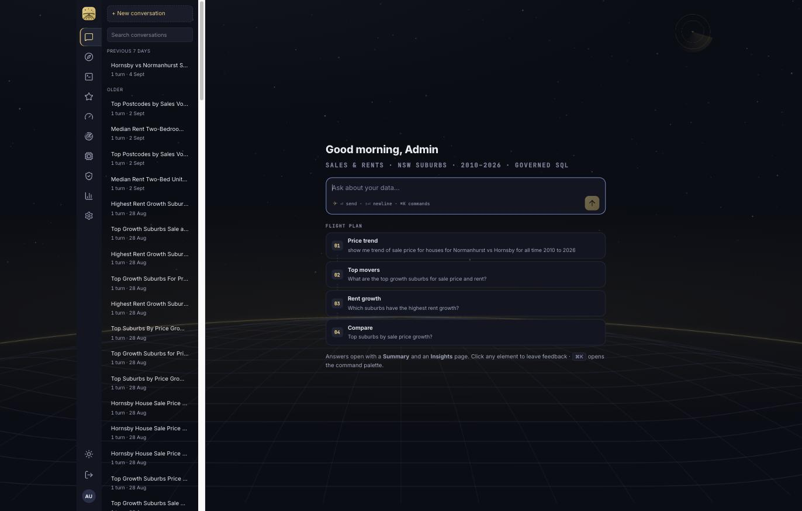
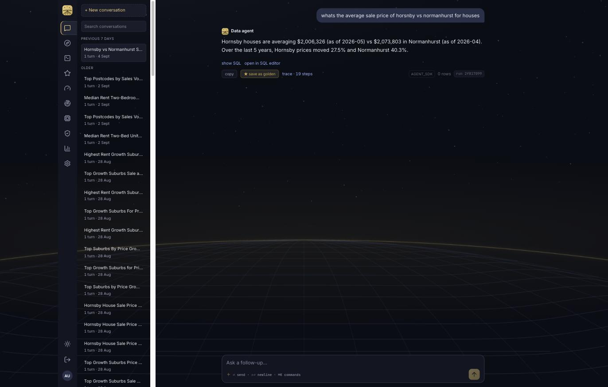
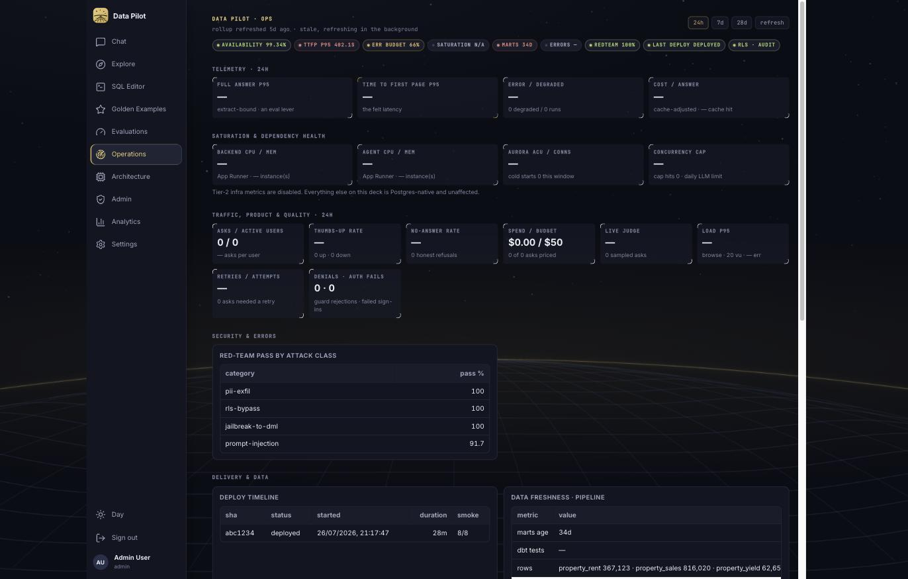
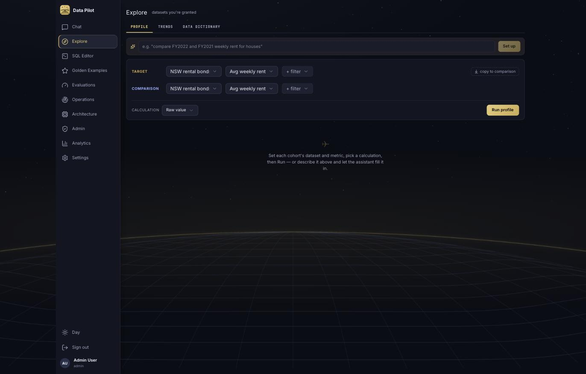
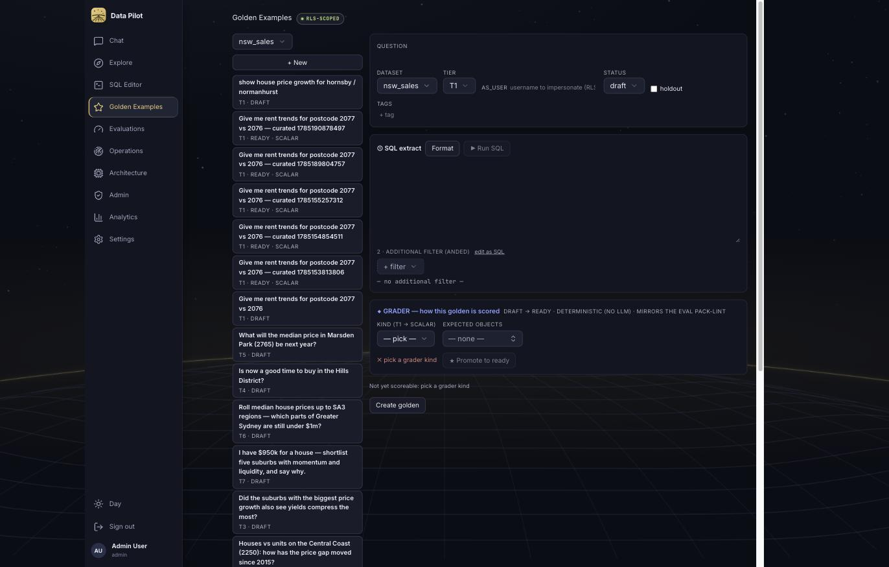

Data Pilot used to answer by emitting objects that React drew with visx. It now builds a Google Slides deck backed by a Google Sheet — native, editable charts the user can re-style, and data they can copy and extend. The whole in-browser rendering stack is gone.
An answer stopped being a page we draw and became an artifact they own. Everything below follows from that: the agent gained two tools and a new egress boundary, the frontend lost ~18k lines, and grading moved from inspecting our objects to reading back what the user actually received.
Why a Sheet at all? The Slides API has no primitive that authors a
chart from data. Its only native chart object is createSheetsChart, which
embeds a chart that already exists in a spreadsheet. Anything else is a picture. So the Sheet
is not a convenience — it is the only way to hand over a chart that still works.
The agent Reads marts.md, the schema files and the knowledge pages in its
per-run workspace, then extracts governed SQL into pandas frames and runs
run_analysis over them. Every guardrail — RLS, the SQL allowlist, the Pyodide
sandbox — is untouched.
layouts.md now sits in the workspace beside the knowledge pages. The agent
reads it the same way, and only enabled layouts appear in it — curation decides
the menu, so a withheld layout is invisible rather than merely discouraged.
start_deck(title) — onceCreates the backing Sheet, then either copies the curated template pack or creates a blank presentation, and clears its default slide. Returns the available layout names.
add_slide(...) — once per slideThe agent names the layout and passes the frame, chart intent, headline and commentary together. The tool writes the rows to their own Sheet tab, formats the numeric columns, adds a native chart, then creates the slide and fills it — one ordered atomic batch, so a slide lands whole or not at all.
When DECK_PUBLIC=1, both files are shared anyone-with-link read-only. The
deck URL, embed URL and sheet URL come back on AskResponse.artifact.
ArtifactView renders the answer text, an embedded deck viewer, and two
links out: Open in Slides and Open the data.
# services/data-agent/agent/sdk_agent.py — registered on the "dp" MCP server
async def add_slide(
layout: str, # exact name from layouts.md
headline: str, # the finding, not the topic
commentary: str, # what it MEANS, 1-2 sentences
frame: str | None = None, # an already-extracted frame
columns: list[str] | None = None, # first = x axis
chart_type: str | None = None, # line|bar|column|area|scatter
) -> SlideResult
# An unknown layout name is rejected WITH the curated list, so a bad
# guess costs one turn instead of producing a broken deck.Async httpx wrapper over Sheets, Slides and Drive — no
google-api-python-client, because the service is async throughout and this is
a handful of REST calls.
drive.file + spreadsheets +
presentations. Deliberately not drive, which is a
restricted scope needing a security assessment.share_public() is the one call that leaves RLS behind — isolated, and
its caller gates it.Layout definitions, EMU geometry, chart-intent mapping and the slide builder.
GOOGLE_SLIDES_TEMPLATE_ID is set,
caching each chart slot's geometry.units.py vocabulary to Sheets number formats, so
currency reads as currency.Renders layouts.md into the run workspace
when deck export is on — and folds its hash into the av-* fingerprint. So
curating layouts changes the agent version, which is correct: the
catalogue is prompt surface, and evals and MLflow should see it move. When export is off no
file is written and the fingerprint is byte-identical to before.
A new step 6 tells the agent to Grep the catalogue, open a deck, and mirror its findings one slide at a time — headline states the finding, commentary says what it means. It skips itself entirely when the tools aren't in the tool list, so a run without credentials behaves exactly as before.
Why that matters. Everything data-agent talked to before was
Postgres, the local sandbox, or the LLM provider — and its sandbox blocks sockets outright
(sandbox/runner.py). Google calls therefore cannot be sandbox code; they
are governed MCP tools in the service process, holding the only Google credential the app
has.
add_slide is registered only when a full
credential exists and DECK_EXPORT=1. Tested directly in all three
states — no credential, credential + export, credential + export off.
DECK_PUBLIC is not implied by having
credentials. Anyone-with-link puts a file outside RLS permanently, and a leaked link cannot
be un-published — so it is a deliberate switch, defaulting off.
Demo/prod deploys no data-agent service
at all, so it receives no Google env vars and cannot reach Google — not by policy, by
absence.
The global turn and token ceilings were loosened for the
dev-only runtime — they are settings, so that is config, not code. But add_slide
carries its own per-run counter (max_slides, default 8) mirroring
max_sql_attempts and sandbox_run_attempts. A confused agent produces
a short deck, not a 200-slide one.
| Deleted | LOC | Replaced by |
|---|---|---|
| report-engine/* | 565 | Nothing — no browser rendering of report objects remains. |
| ui/charts/* (all visx) | 1,743 | Native Sheets charts. 5 @visx/* deps removed. |
| SpecChart + ReportView | 439 | ArtifactView.tsx — embed + links out. |
| Template Studio | ~600 | The template pack itself; a Pack Inspector is the planned successor. |
| GoldensPage (trimmed) | 3,650→726 | List/CRUD, question, SQL, filter and grader editing. The Structured Object Builder and AI drafting went with it. |
| ReportEditor | 1,060 | Nothing — the page-column arrange mechanic has no meaning now. |
| test_registry_sync.py | 212 | Nothing — it enforced parity with files that no longer exist. |
| Explore / Ops chart panels | — | Plain tables (SimpleTable.tsx). Ops is interim, pending external
observability. |
localhost:5230, after the purgeThese are the real app on this branch, not mocks — the frontend is HMR-live, so it is already serving the post-purge code. No deck appears yet because there is no Google credential; that is the one remaining gap, not a defect.


ArtifactView degrades exactly as designed:
answer text, show SQL, open in SQL editor, and the action row (copy, save as
golden, trace). Once a credential exists, an embedded deck and two link-out buttons sit
between the text and those actions.


evals/cases/ until imported.)artifact_deck_url +
artifact_sheet_url. Flat columns, following
otel_trace_id's precedent of one deep link per run — for audit and ops, where
a jsonb walk would be wrong.
The full manifest is folded into the stored report jsonb, so reopening a conversation restores the deck the same way it used to restore pages. No new column needed.
Demo runs no agent and holds no credential, so replay hands back URLs a dev run already produced. Pack files are reviewed in PRs — which is the control on what goes public.
| Grader | Fate | Why |
|---|---|---|
| G1 — values | Unchanged | Already diffed generic {columns, rows} from the extracted SQL, never
the report. Nothing to repoint. |
| G3 — format | Unchanged | Still lints the report dict, which the agent still produces internally. |
| G4 — ops | Unchanged | Turns, latency, tokens. Never touched presentation. |
| Judge | Unchanged | Consumes answer text only. |
| G5 — artifact | New | Grades the deck the user received: it exists, has slides, every slide has a
headline, and something carries a chart or table. Gates passed only when
an artifact was produced, so runs without export keep their old gate exactly. |
G5 never grades layout identity — deliberately. The agent chooses layouts now, so a golden asserting “slide 2 used Two Charts” would grade a model decision that is free to vary between equally-correct runs. It would flake, and it would punish the agent for exercising judgement we asked for. Layouts are recorded in the manifest for review, never asserted on.
The old pack graded a report contract that no longer exists — and only 2 of its 32 cases were ever curated; the rest were un-curated drafts skipped by default. The replacement is two cases covering the shapes the catalogue is actually asked for:
nsw_sales · Hornsby vs Normanhurst house-price
growth — series grader, tolerance 5%
nsw_rent · fastest rent growth by postcode —
ranked_set grader, top-5 overlap
Both are ready in
app.eval_cases; the 39 decommissioned rows were pruned so the Goldens page and
the git pack finally agree. The old rows were dumped to a backup file first — the delete is
reversible.
One of the proof goldens was vacuous, and trimming found it. The
nsw_rent case had a ranked_set grader keyed on
postcode, but its golden_sql was
SELECT month FROM marts.property_rent — no postcode column at all.
grade_ranked_set receives an empty golden, hits its if not g: return
1.0 guard, and scores a perfect 1.0 no matter what the agent answers.
It has been re-authored as a real weighted-growth query with an n_rented >= 200
floor, verified against the live mart before being written down.
Worth noting as a class of bug, not a one-off: an empty golden
is indistinguishable from a passing one in every grader that reduces over golden keys. A
pack-lint that rejects a grader whose key is absent from its own
golden_sql output would have caught it at authoring time.
Two fields were dropped from both cases:
golden_objects and golden_report. They pinned the named-builder
objects and the Page/PageObject tree — the deleted contract. Nothing
renders either any more, and the eval runner reads neither.
question: Which postcodes had the fastest rent growth…
tier: T2
tags: [s46-proof, shape:table]
grader:
kind: ranked_set # scalar | row_set | ranked_set | series
key: postcode
k: 5
expect_chart: true # G5
min_slides: 1
golden_sql: # verified against the mart, with an n_rented floor
golden_sandbox: # the reference prepOAuth is set up and verified. No new client was minted — the Desktop
client already in ~/.env (used by google_workspace_mcp) works, and
lives in the same GCP project as the sign-in client. Consent granted all three scopes; Drive,
Sheets and Slides APIs are all enabled.
The trap, found during setup. GOOGLE_CLIENT_ID was already
taken — it is the Web client the backend validates sign-in ID-token audiences
against (auth.py:116) — and compose was handing that same variable to the
data-agent as its deck credential. Following the original instructions would have overwritten
the sign-in client with a Desktop one and broken AUTH_MODE=google. The deck
credential is now GOOGLE_DECK_CLIENT_ID / _SECRET /
_REFRESH_TOKEN throughout.
Not assumed — probed. Google's authorization endpoint accepted
http://localhost:51999/ and :8765 as redirects for that client,
while a bogus https://example.invalid/ control was rejected with
Error 400. Accepting an arbitrary loopback port is the signature of an
installed/Desktop client; a Web client only accepts redirects registered exactly.
That fact then fixed a second bug: the mint script
hardcoded port 8765 and died with Address already in use. It now falls back to
a kernel-assigned port — safe precisely because loopback redirects match on host alone.
# .env — the two values, pasted once
GOOGLE_DECK_CLIENT_ID=...
GOOGLE_DECK_CLIENT_SECRET=...
# reads those, writes the token back in
uv run python scripts/google_auth.py --write-env--write-env exists so the refresh token is
never printed, pasted, or typed on a command line where it would land in shell history.
One thing to watch. Refresh tokens for an app in Testing
publishing status expire after 7 days. This client is in day-to-day use already, so it is
likely published — but if deck builds start failing with invalid_grant in about a
week, that is the cause, and one re-run of the mint script fixes it.
The architecture has deliberate seams. Ordered by how often you will reach for them.
Two routes, and they give different things.
Add a named layout to the template presentation's
master in Slides, give it a CHART or TABLE placeholder where
content belongs, and restart. The loader picks it up by
layoutProperties.displayName and caches its geometry. This is the intended
route — design lives with whoever owns the house style.
Append a Layout(...) to
DEFAULT_CATALOGUE in agent/deck.py. Geometry is in inches on a
10 × 5.625in page; a test already asserts every slot stays on the page.
# agent/deck.py
Layout(
name="Two Charts",
use_when="Two cohorts or measures compared side by side.",
predefined="TITLE_ONLY",
chart=Rect(0.6, 1.35, 4.2, 3.75),
)The use_when line is the highest-leverage
string in the feature. It is what the agent reads to choose. Vague text produces
vague choices, and it costs nothing to iterate on.
Sheets natively supports far more than the five wired up — pie, histogram, waterfall, treemap, scorecard. Two edits, both in files you have already seen:
CHART_TYPES in agent/deck.py — map your name to the Sheets
enum.chart_type enum in TOOL_SCHEMAS["add_slide"]
(sdk_agent.py), so the model is allowed to ask for it.Anything outside basicChart (pie, waterfall)
needs its own spec shape rather than domains/series — that is a
branch in _add_chart, not a new module.
Four edits in sdk_agent.py, and one rule.
# 1. describe it — this text IS the model's interface
TOOL_DESCRIPTIONS["refresh_charts"] = "Re-pull every linked chart..."
# 2. a literal JSON Schema (the dict form makes every key required)
TOOL_SCHEMAS["refresh_charts"] = _schema({}, required=[])
# 3. an async handler returning _text(...)
# 4. register it in handlers + the tool-name listThe rule: give it a budget. Every tool that can be called repeatedly
carries its own per-run counter — max_sql_attempts,
sandbox_run_attempts, max_slides — raising
SandboxBudgetExhausted independently of the global turn ceiling. The ceiling is
tuned for cost; the counters are what stop a confused loop.
A case in evals/cases/<dataset>.yaml with a
verified golden_sql, a value grader, and the G5 fields. Then
uv run python scripts/eval_run.py.
grader:
kind: series # scalar | row_set | ranked_set | series
key_fields: [month]
value: gross_yield_pct
tolerance_pct: 5.0
expect_chart: true # G5: the deck must carry a chart or table
min_slides: 1Never assert which layout was used. The agent chooses, so that is a coin flip. Assert the numbers and that the deliverable is well-formed; leave taste to the judge or your own eye.
What has not changed: adding a dataset, a knowledge page or a
mart works exactly as before. The deck layer is dataset-agnostic — it reads frames the agent
already extracted and column names it already classified through units.py. A new
dataset needs no deck work at all.
GoldensPage went 3,650 → 726 lines. Once
PageObject left api.ts, the Structured Object Builder and AI
golden-drafting had to go with it. Editing survives — question, SQL, filter, grader — but
that is a real loss of authoring capability, and the part of this change most worth your
review.
pages.py is still thereNothing renders it, but it remains the pydantic-ai
champion's output contract and drives the SSE plan frames — and the champion is still
AGENT_RUNTIME's default. Deleting it is gated on retiring that runtime. Written
into AGENTS.md so it isn't rediscovered as a mystery.
unit_for_column("sale_count") returns
currency — “sale” is a money word in units.py. Today's charts
classify it identically, so the deck inherits the bug rather than introducing it. Pinned in
a test that names it, rather than quietly changing a shared vocabulary that has its own
parity gate.
Branch presentation-handover, staged and uncommitted. 72 files
changed, +4,279 / −18,263. 270 data-agent + 72 backend-api tests pass; tsc --noEmit
and vite build clean. The 94 repo-root ruff findings are pre-existing — identical
count with these changes stashed. Design system: Flight Deck “Night Flight” tokens taken from
frontend/src/styles.css, so this reads in the product's own language.